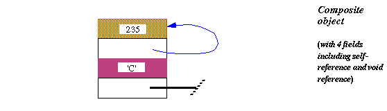
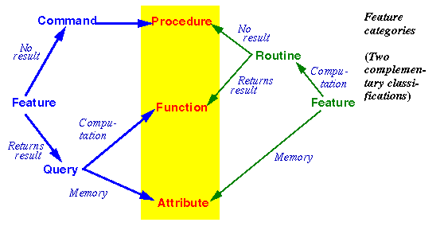
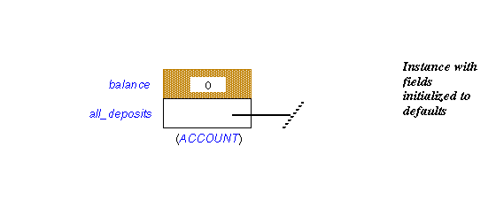
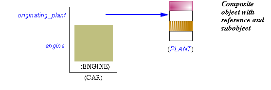

| Eiffel ENViSioN! |
| An Eiffel Tutorial, The Dynamic Structure: Execution Model |
|
A system with a certain static structure describes a set of possible executions. The run-time model governs the structure of the data (objects) created during such executions. The properties of the run-time model are not just of interest to implementers; they also involve concepts directly relevant to the needs of system modelers and analysts at the most abstract levels. Objects, fields, values and referencesA class was defined as the static description of a a type of run-time data structures. The data structures described by a class are called instances of the class, which in turn is called their generating class (or just "generator"). An instance of ACCOUNT is a data structure representing a bank account; an instance of LINKED_LIST is a data structure representing a linked list. An object, as may be created during the execution of a system, is an instance of some class of the system. Classes and objects belong to different worlds: a class is an element of the software text; an object is a data structure created during execution. Although it is possible to define a class whose instances represent classes (as class E_CLASS in the ISE libraries, used to access properties of classes at run time), this does not eliminate the distinction between a static, compile-time notion, class, and a dynamic, run-time notion, object. An object is either an atomic object (integer, real, boolean, double) or a composite object made of a number of fields, represented by adjacent rectangles on the conventional run-time diagrams: Each field is a value. A value can be either an object or an object reference:
FeaturesA feature, as noted, is an operation available on instances of a class. A feature can be either an attribute or a routine. This classification, which you can follow by starting from the right on the figure above, is based on implementation considerations:
If we instead take the viewpoint of the clients of a class (the classes relying on its feature), you can see the relevant classification by starting from the left on the figure:
From the outside, there is no difference between a query implemented as an attribute and one implemented as a function: to obtain the balance of an account a, you will always write a.balance. In the implementation suggested above, a is an attribute, so that the notation denotes an access to the corresponding object field. But it is also possible to implement a as a function, whose algorithm will explore the lists of deposits and withdrawals and compute their accumulated value. To the clients of the class, and in the official class documentation as produced by the environment tools, the difference is not visible. This principle of Uniform Access is central to Eiffel's goals of extendibility, reusability and maintainability: you can change the implementation without affecting clients; and you can reuse a class without having to know the details of its features' implementations. Most object-oriented languages force clients to use a different notation for a function call and an attribute access. This violates Uniform Access and is an impediment to software evolution, turning internal representation changes into interface changes that may disrupt large parts of a system. A simple classThe following simple class text illustrates the preceding concepts
(The {NONE} qualifier and the invariant clause, used here to make the example closer to a real class, will be explained shortly. DEPOSIT_LIST refers to another class, which can be written separately using library classes.) It's easy to deduce, from a feature's syntactic appearance, the category to which it belongs. Here:
Creating and initializing objectsClasses, as noted, are a static notion. Objects appear at run time; they are created explicitly. Here is the basic instruction to create an object of type ACCOUNT and attach it to x:
create x
assuming that x has been declared of type ACCOUNT. Such an instruction must be in a routine of some class -- the only place where instructions can appear -- and its effect at run time will be threefold: create a new object of type ACCOUNT; initialize its fields to default values; and attach the value of x to it. Here the object will have two fields corresponding to the two attributes of the generating class: an integer for balance, which will be initialized to 0, and a reference for all_deposits, which will be initialized to a void reference:  The language specifies default initialization values for all possible types:
It is possible to override the initialization values by providing -- as in the earlier example of class HELLO -- one or more creation procedures. For example we might change ACCOUNT to make sure that every account is created with an initial deposit:
A create clause may list zero or more (here just one) procedures of the class. Note the use of the same keyword, create, for both a creation clause, as here, and creation instructions such as create x. In this case the original form of creation instruction,
create x, is not
valid any more for creating an instance of
ACCOUNT1; you must use the form
known as a creation call. Such a creation call will have the same effect as the original form -- creation, initialization, attachment to x -- followed by the effect of calling the selected creation procedure, which here will call deposit with the given argument. Note that in this example all that make does is to call deposit. So an alternative to introducing a new procedure make would have been simply to introduce a creation clause of the form create deposit, elevating deposit to the status of creation procedure. Then a creation call would be of the form create x.deposit (2000). Some variants of the basic creation instruction will be reviewed later: instruction with an explicit type; creation expressions. See "Creation variants". EntitiesThe example assumed x declared of type ACCOUNT (or ACCOUNT1). Such an x is an example of entity, a notion generalizing the well-known concept of variable. An entity is a name that appears in a class text to represent possible run-time values (a value being, as defined earlier, an object or a reference). An entity is one of the following:
The third case, local entities, arises when a routine needs some auxiliary values for its computation. Here is an example of the syntax:
This example is a variant of deposit for which we assume that the elements of a DEPOSIT_LIST such as all_deposits are no longer just integers, but objects, instances of a new class, AMOUNT. Such an object will contain an integer value, but possibly other information as well. So for the purpose of procedure deposit we create an instance of AMOUNT and insert it, using procedure extend, into the list all_deposits. The object is identified through the local entity new, which is only needed within each execution of the routine (as opposed to an attribute, which yields an object field that will remain in existence for as long as the object). The last case of entity, Result, serves to denote, within the body of a function, the final result to be returned by that function. This was illustrated by the function deposits_count, which read
The value returned by any call will be the value of the expression all_deposits.count (to be explained in detail shortly) for that call, unless all_deposits has value Void, denoting a void reference (/= is "not equal"). The default initialization rules seen earlier for attributes (see the corresponding table) also serve to initialize local entities and Result on routine entry. So in the last example, if all_deposits is void (as in the case on initialization with the class as given so far), Result keeps its default value of 0, which will be returned as the result of the function. CallsApart from object creation, the basic computational mechanism, in the object-oriented style of computation represented by Eiffel, is feature call. In its basic form, it appears as
where target is an entity or more generally an expression, feature is a feature name, and there may be zero or more argument expressions. In the absence of any argument the part in parentheses should be removed. We have already seen such calls. If the feature denotes a procedure, the call is an instruction, as in
If feature denotes a query (function or attribute), the call is an expression, as in the right-hand side of
Following the principle of Uniform Access, this form is the same for calls to attributes and to functions without arguments. In this example, feature count from class DEPOSIT_LIST may indeed be implemented in either of these two ways: we can keep a count field in each list, updating it for each insertion and removal; or we can compute count, whenever requested, by traversing the list and counting the number of items. In the case of a routine with arguments -- procedure or function -- the routine will be declared, in its class, as
meaning that, at the time of each call, the value of each formal will be set to the corresponding actual (formal1 to argument1 and so on). In the routine body, it is not permitted to change the value of a formal argument, although it is possible to change the value of an attached object through a procedure call such as formal1.some_procedure (…). Infix and prefix notationBasic types such as INTEGER are, as noted, full-status citizens of Eiffel's type system, and so are declared as classes (part of the Kernel Library). INTEGER, for example, is characterized by the features describing integer operations: plus, minus, times, division, less than, and so on. With the dot notation seen so far, this would imply that simple arithmetic operations would have to be written with a syntax such as i.plus (j) instead of the usual i + j. This would be awkward. Infix and prefix features solve the problem, reconciling the object-oriented view of computation with common notational practices of mathematics. The addition function is declared in class INTEGER as
Such a feature has all the properties and prerogatives of a normal "identifier" feature, except for the form of the calls, which is infix, as in i + j, rather than using dot notation. An infix feature must be a function, and take exactly one argument. Similarly, a function can be declared as prefix "-", with no argument, permitting calls of the form -3 rather than (3).negated. Predefined library classes covering basic types such as INTEGER, CHARACTER, BOOLEAN, REAL, DOUBLE are known to the Eiffel compiler, so that a call of the form i + j, although conceptually equivalent to a routine call, can be processed just as efficiently as the corresponding arithmetic expression in an ordinary programming language. This brings the best of both worlds: conceptual simplicity, enabling Eiffel developers, when they want to, to think of integers and the like as objects; and efficiency as good as in lower-level approaches. Infix and prefix features are available to any class, not just the basic types' predefined classes. For example a graphics class could use the name infix "|-|" for a function computing the distance between two points, to be used in expressions such as point1 |-| point2. Type declarationEvery entity appearing in an Eiffel text is declared as being of a certain type, using the syntax already encountered in the above examples:
This applies to attributes, formal arguments of routines and local entities. You will also declare the result type for a function, as in the earlier example:
Specifying such a function result type also declares, implicitly, the type for Result as used in the function's body. What is a type? With the elements seen so far, every type is a class. INTEGER, used in the declaration of deposits_count, is, as we have seen, a library class; and the declaration all_deposits: DEPOSIT_LIST assumes the existence of a class DEPOSIT_LIST. Three mechanisms introduced later in this tutorial -- expanded types, genericity and anchored declarations -- will generalize the notion of type slightly. But they do not change the fundamental property that every type is based on a class, called the type's base class. In the examples seen so far, each type is a class, serving as its own base class. An instance of a class C is also called "an object of type C". Type categoriesIt was noted above that a value is either an object or a reference. This corresponds to two kinds of type: reference types and expanded types. If a class is declared as just
it defines a reference type. The entities declared of that type will denote
references. So in the declaration
x:
ACCOUNT the possible run-time values for x are references, which will be either void or attached to instances of class ACCOUNT. Instead of class, however, you may use the
double keyword expanded class, as in the
EiffelBase class definition
indexing description:
"Integer values" expanded class INTEGER feature
-- Basic operations infix
"+"
(other:
INTEGER):
INTEGER is do … end … Other feature declarations … end
-- class INTEGER In this case the value of an entity declared as n: INTEGER is not a reference to an object, but the object itself -- in this case an atomic object, an integer value. It is also possible, for some non-expanded class C, to declare an entity as
x:
expanded C so that the values for x will be objects of type C, rather than references to such objects. This is our first example of a type -- expanded C -- that is not directly a class, although it is based on a class, C. The base type of such a type is C. Note that the value of an entity of an expanded type can never be void; only a reference can. Extending the earlier terminology, an expanded entity is always attached to an object, atomic (as in the case of n: INTEGER) or composite (as in x: expanded ACCOUNT). Expanded declarations make it possible to construct composite objects with subobjects, as in the following abbreviated class declaration (indexing clause and routines omitted):
Here is an illustration of the structure of a typical instance of CAR: This example also illustrates that the distinction between expanded and reference types is important not just for system implementation purposes but for high-level system modeling as well. Consider the example of a class covering the notion of car. Many cars share the same originating_plant, but an engine belongs to just one car. References represent the modeling relation "knows about"; subobjects, as permitted by expanded types, represent the relation "has part", also known as aggregation. The key difference is that sharing is possible in the former case but not in the latter. Basic operationsTo assign, copy and compare values, you can rely on a number of mechanisms. Two of them, assignment and equality testing, are language constructs; the others are library features, coming from the top-level class ANY seen earlier. Assignment uses the symbol :=. The assignment
instruction
x
:= y updates the value of x to be the same as that of y. This means that:
To copy an object, use x.copy (y) which assumes that both x and y are non-void, and copies the contents of y's attached object onto those of x's. For expanded entities the effect is the same as that the of the assignment x := y. A variant of the copy operation is clone. The expression clone (y) produces a newly created object, initialized with a copy of the object attached to y, or a void value if y itself is void. For a reference type (the only interesting case) the returned result for non-void y is a reference to the new object. This means we may view clone as a function that performs
So in the assignment x := clone (y), assuming both entities of reference types and y not void, will attach x to a new object identical to y's attached object, as opposed to the assignment x := y which attaches x to the same object as y. To determine whether two values are equal, use the expression x = y. For references, this comparison will yield true if the values are either both void or both attached to the same object; this is the case in the last figure in the state after the assignment, but not before. The symbol for not equal is /=, as in x /= y. As with assignment, there is also a form that works on objects rather than references: x.is_equal (y) will return true when x and y are both non-void and attached to field-by-field identical objects. This can be true even when x= y is not, for example, in the figure, before the assignment, if the two objects shown are field-by-field equal. A more general variant of is_equal is used under the form equal (x, y). This is always defined, even if x is void, returning true whenever is_equal would but also if x and y are both void. (In contrast, x.is_equal (y) is not defined for void x and would, if evaluated, yield an exception as explained in "Exception handling" Void denotes a void reference. So you can make x void through the assignment x := Void, and test whether it is void through if x = Void then … Where assignment := and the equality operators = and /= were language constructs, copy, clone, is_equal, equal and Void are library features coming from class ANY. The type of Void, as declared in ANY, is NONE, the "bottom" type. Using the redefinition mechanisms to be seen in the discussion of inheritance, a class can redefine copy and is_equal to cover specific notions of copy and equality. The assertions will ensure that the two remain compatible: after x.copy (y), the property x.is_equal (y) must always be true. The effect of clone will automatically follow a redefinition of copy, and equal will follow is_equal. To guarantee the original, non-redefined semantics you may use the variants standard_copy, standard_clone, standard_equal, all defined in ANY as "frozen", that is to say non-redefinable. Deep operations and persistenceFeature clone only duplicates one object. If some of the object's fields are references to other objects, the references themselves will be copied, not those other objects. It is useful, in some cases, to duplicate not just one object but an entire object structure. The expression deep_clone (y) achieves this goal: assuming non-void y, it will produce a duplicate not just of the object attached to y but of the entire object structure starting at that object. The mechanism respects all the possible details of that structure, such as cyclic reference chains. Like the preceding features, deep_clone comes from class ANY. A related mechanism provides a powerful persistence facility. A call of the form
will store a copy of the entire object structure starting at x, under a suitable representation. Like deep_clone, procedure store will follow all references to the end and maintain the properties of the structure. The function retrieved can then be used -- in the same system, or another -- to recreate the structure from the stored version. As the name suggests, Some_file_or_network_connection can be an external medium of various possible kinds, not just a file but possibly a database or network. ISE's EiffelNet client-server library indeed uses the store - retrieved mechanism to exchange object structures over a network, between compatible or different machine architectures, for example a Windows client and a Unix server. Memory managementReference reattachments x := y of the form illustrated by this figure can cause objects to become unreachable. This is the case for the object identified as OBJ2 on that figure (the object to which x was attached before the assignment) if no other reference was attached to it. In all but toy systems, it is essential to reclaim the memory that has been allocated for such objects; otherwise memory usage could grow forever, as a result of creation instructions create x… and calls to clone and the like, leading to thrashing and eventually to catastrophic termination. The Eiffel method suggests that the task of detecting and reclaiming such unused object space should be handled by an automatic mechanism (part of the Eiffel run-time environment), not manually by developers (through calls to procedures such as Pascal's dispose and C/C++'s free). The arguments for this view are:
ISE Eiffel provides a sophisticated garbage collector which efficiently handles the automatic reclamation process, while causing no visible degradation of a system's performance and response time. Information hiding and the call ruleThe basic form of computation, it has been noted, is a call of the form target.feature (…). This is only meaningful if feature denotes a feature of the generating class of the object to which target (assumed to be non-void) is attached. The precise rule is the following: Feature Call rule The first condition simply expresses that if target has been declared as target: A then feature must be the name of one of the features of A. The second condition reflects Eiffel's application of the principles of information hiding. A feature clause, introducing one or more feature declarations, may appear not only as
but may also include a list of classes in braces, feature {A, B, …}, as was illustrated for ACCOUNT:
This form indicates that the features appearing in that clause are only available -- in the sense of available for calls, as used in the Feature Call rule -- to the classes listed. In the example feature all_deposits is only available to NONE. Because of the global inheritance structure this means it is in fact available to no useful client at all, and is equivalent in practice to feature { } with an empty class list, although the form listing NONE explicitly is more visible and hence preferred. With this specification a class text including the declaration acc: ACCOUNT and a call of the form
violates the Feature Call rule and will be rejected by the Eiffel compiler. Besides fully exported features (introduced by feature … without further qualification) and fully secret ones (feature { } or feature {NONE}), it is possible to export features selectively to some specified classes, using the specification
for arbitrary classes A, B, … This enables a group of related classes to provide each other with privileged access, without requiring the introduction of a special module category above the class level (see "Clusters"). Exporting features selectively to a set of classes A, B, … also makes them available to the descendants of these classes. So a feature clause beginning with just feature is equivalent to one starting with feature {ANY}. These rules enable successive feature clauses to specify exports to different clients. In addition, the recommended style, illustrated in the examples of this chapter, suggests writing separate feature clauses -- regardless of their use for specifying export privileges -- to group features into separate categories. The standard style rules define a number of fundamental categories and the order in which they should appear; they include: Initialization for creation procedures, Access for general queries, Status report for boolean-valued queries, Status setting, Element change, Implementation (for selectively exported or secret features). Every feature in the EiffelBase library classes belongs to one of the predefined categories. The Feature Call rule is the first of the rules that make Eiffel a statically typed approach, where the applicability of operations to objects is verified at compile time rather than during execution. Static typing is one of the principal components of Eiffel's support for reliability in software development. Execution scenarioThe preceding elements make it possible to understand the overall scheme of an Eiffel system's execution. At any time during the execution of a system, one object is the current object of the execution, and one of the routines of the system, the current routine, is being executed, with the current object as its target. (We will see below how the current object and current routine are determined.) The text of a class, in particular its routines, make constant implicit references to the current object. For example in the instruction
appearing in the body of procedure deposit of class ACCOUNT, the name of the attribute balance, in both occurrences, denotes the balance field of the current object, assumed to be an instance of ACCOUNT. In the same way, the procedure body that we used for the creation procedure make in the ACCOUNT1 variant
contains a call to the procedure deposit. Contrary to earlier calls written in dot notation as target.feature (…), the call to deposit has no explicit target; this means its target is the current object, an instance of ACCOUNT1. Such a call is said to be unqualified; those using dot notations are qualified calls. Although most uses of the current object are implicit, a class may need to name it explicitly. The predefined expression Current is available for that purpose. A typical use, in a routine merge (other: ACCOUNT) of class ACCOUNT, would be a test of the form
With these notions it is not hard to define precisely the overall scenario of a system execution by defining which object and routine will, at each instant, be the current object and the current routine:
AbstractionThe description of assignments stated that in x := y the target x must be an entity. More precisely it must be a writable entity. This notion excludes formal routine arguments: as noted, a routine r (arg: SOME_TYPE) may assign to arg (reattaching it to a different object), although it can change the attached objects through calls of the form arg.procedure (…). Restricting assignment targets to entities precludes assignments of the form obj.some_attribute := some_value, since the left-hand side obj.some_attribute is an expression (a feature call), not an entity: you may no more assign to obj.some_attribute than to, say, a + b -- another expression that is also, formally, a feature call. To obtain the intended effect of such an assignment you may use a procedure call of the form obj.set_attribute (some_value), where the base class of obj's type has defined the procedure
This rule is essential to enforcing the method. Permitting direct assignments to an object's fields -- as in C++ and Java -- would violate all the tenets of information hiding by letting clients circumvent the interface carefully crafted by the author of a supplier class. It is the responsibility of each class author to define the exact privileges that the class gives to each of its clients, in particular field modification rights. Building a class is like building a machine: you design the internals, to give yourself the appropriate mechanisms; and you design the control panel, letting users (clients) access the desired subset of these mechanisms, safely and conveniently. The levels of privilege available to the class author include, for any field:
The last case is particularly interesting is that it allows the class designer to set the precise way in which clients will manipulate the class instances, respecting the properties of the class and its integrity. The exported routines may, through the Design by Contract™ mechanism reviewed later, place some further restrictions on the permitted modifications, for example by requiring the withdrawn amount to be positive. These rules follow directly from the more general goals (reusability, extendibility, reliability) and principles (Uniform Access, information hiding) underlying Eiffel software design. They reflect a view that each class must denote a well-understood abstraction, defined by a set of exported features chosen by the class designer -- the "control panel". The class documentation (see the contract form) makes this view clear to client authors; no violation of that interface is permitted. This approach also paves the way for future generalization -- the final step of the cluster lifecycle, seen earlier -- of the most promising components, and their inclusion into reusable libraries. See also |
| © 2003-2004 Eiffel Software. All rights reserved. |